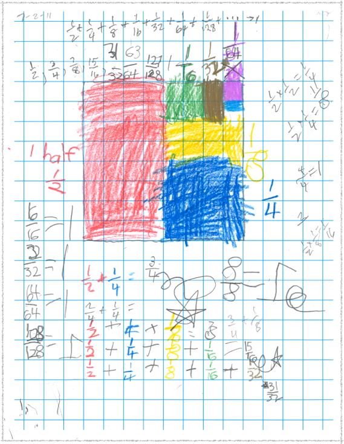
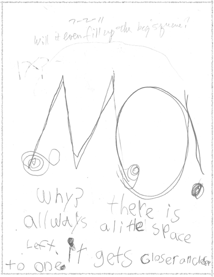
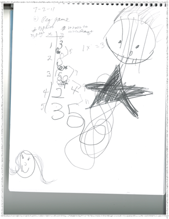
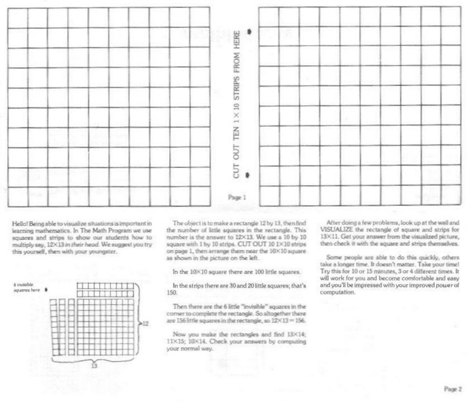

Sarah W, age 6, comes from CA to work with Don for 5 days- Day 4

Day 4: Saturday 2 July 2011
1. Don showed Sarah how to multiply 12x13 in her head.
3. Don asked Sarah below, will it ever fill up the big square? She wrote “NO! Why? There is always a little space left. It gets closer and closer to one”.
2. Don started Sarah on the infinite series 1/2 + 1/4 + 1/8 +… She got up to 1/128,
She found patterns in the bottom number of the fractions (doubling, powers of 2) ;
she found patterns in the partial sums (the top number is one less than
the bottom number) and the partial sum always less than 1.


-
3.Sarah worked on The Peg Game/The Shuttle Puzzle. For directions and rules go to Don’s A Map To Calculus and in the upper right-hand corner click on Hands On Activities.
This takes time. If a youngster has difficulty with 4 pegs on each side, Don suggests they start with 1 pair of pegs, do that then try 2 pair, then go up to 4 pair.
If you have difficulty with a hard problem, make up an easier one, and build up to the harder ones.
This is a powerful idea in learning almost anything, certainly Don has received email from former students telling him this was an important idea in their college studies.
Don made the table- x being the number of pairs of pegs and y being the number of moves to interchange the colored pegs. Sarah counted the number of moves to interchange the pegs. She saw a pattern in the differences of the y numbers- going up 5, 7, 9, and 11. We had to stop at this point.
N.B. In the process of studying the infinite series (adding these fractions forever!), Sarah also did the following: multiplied fractions, like 1/2 x 1/4 = 1/8 .., found equivalent fractions, like 1/2=2/4 .. , found fractions that =1, like 16/16=1, found the partial sums of the infinite series, like 1/2, 1/2 +1/4 = 3/4, 1/2 +1/4 + 1/8 = 7/8..., compared fractions to 1, like 15/16 <1, and 16/16=1, subtracted fractions, like 16/16 - 1/16=15/16, AND did most of these by looking at the picture she drew.

